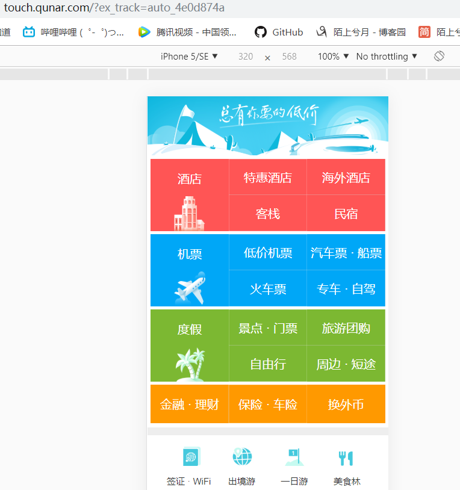

响应式布局能通吃pc端和移动端？
不能。从排版上来说：pc端和移动端一般布局和显示方式差异十分巨大。
（同一个页面在pc端和移动端的呈现方式和风格迥异）
另外从事件响应上来说：pc端主要是mouse事件，而移动端则是touch、tap、swipe等事件。两者的事件响应机制完全不同。单单是这两点，就足以让pc端和移动端独立为两个项目，甚至页面要挂在不同的域名上。比如腾讯视频、哔哩哔哩、去哪儿网的pc端域名分别是：v.qq.com、www.bilibili.com、www.qunar.com。他们对应的移动站分别为3g.v.qq.com、m.bilibili.com、touch.qunar.com。

所以通常处理方法是这样的：把pc端作为主项目，在进入pc端项目主页时，检测浏览器的navigator.userAgent，如果判断结果是移动端，则跳转到对应移动端项目的主页。否则，跳转到pc端项目主页。
window.location.href = /Android|webOS|iPhone|iPod|iPad|BlackBerry/i.test(navigator.userAgent) ? "https://m.bilibili.com/" : "https://www.bilibili.com/";
（一行代码搞定，b站网址仅作为示例）
核心思路：
在谈论响应式布局时，我们首先需要明白这样一件事：响应式布局的目的不是让一个网页的布局比例在任何设备都显示得完全一样，而是让网页在各个设备中都能正常且比较舒服地显示，不影响用户的阅读体验。换言之，首要的任务是不影响用户的正常阅读和正常操作，而一些比较次要的诸如内容两边的留白，大面积的背景图，导航键之间的间距比例，是可以做适当调整的。
为什么不做完全意义上的等比缩放呢？这是因为如果一般PC端设计稿（1920*1080）为基础，去做等比缩放，在小屏幕中所有的文字，图标等都会变得非常的小，难以阅读和操作。
所以，在响应式布局的1366*768和1920*1080两个页面中，他们的某个按钮的大小，某段文字的字体大小，可能是完全一样的。这并不出奇。
依赖手段：
目前业内主要有两种技术，一种是依靠js去动态地给元素赋予类名，这显然不科学。另一种也是大多数响应式页面会采用的一种技术，则是媒体查询（media query）。媒体查询的优势除了能将样式的工作完全交给CSS来做以外，它还有一个十分优秀的特性：替换性。和覆盖性不同，当你需要在不同设备更改样式代码时，只更改需要更改的那一小部分就可以了，其他的CSS样式将继承下来。
基本手法：
以1920*1080的设计稿起步，对内容区设置一个定宽的容器，一般是1000px~1400px;令其水平居中（margin:0 auto）。当设备的宽度接近最初定宽时，则将容器的width稍微减小一些。同时容器里面的部分子元素的宽高也做适当的缩小（或者数量做适当的缩减），一直到设备能在1024*768，也就是业界普遍认为的最小电脑端设备正常显示时，就不再继续缩小。此时这个最终容器定宽（约为1000px左右）就是容器的最小宽度（min-width）。
大型网站示例：
1.哔哩哔哩
实现思路：内容容器（bili-wrapper）初始宽度为1160px,水平居中。在页面宽度为1400px时，内容容器宽度缩为980px;
2.腾讯视频
直接把body作为内容容器，借助媒体查询在不同的屏幕宽度下做相应调整，最小的body宽度为1030px;
3.去哪儿网
去哪儿网的q_page，借助媒体查询，最小容器宽度为980px，水平居中。
类似的大型网站数不胜数，@media是一个绕不开的话题，也是目前业界最流行的一种手段。